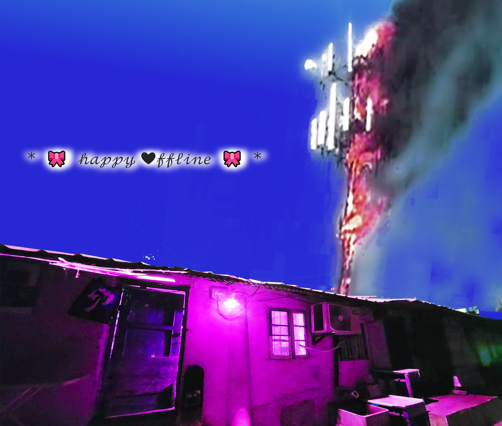

在租约到期前的最后一个周末，我们决定在透明社会举办一场局域网聚会，将这个繁忙的互联网枢纽转变为一个自连接的线下枢纽。早期的局域网聚会通常指一群游戏玩家自带电脑到聚会地点，通过交换机建立局域网，连续几天玩网络游戏。随着在线网络的普及及其在网络游戏中的隐性要求，局域网聚会逐渐淡出主流。透明社会一直致力于创造线下聚会和公共讨论，呼应其线下身份——一个像空气一样真实、尚未存储于云端、未被看见的社会。在大多数社交联系、沟通和信息传播（包括你正在阅读这篇文章的方式）都必须流经在线平台的时代，线下网络提供了一种替代性的社会想象——一种基于直接交流和握手的关联网。这不仅仅是网络群体生活的线下版本；从古巴的“每周包裹”（公众之间传递的共享硬盘）到局域网聚会，它们都暗示着一个超越我们想象的线下世界。 On the last weekend before our lease expired, we decided to host a LAN party at Transparent Society, transforming this bustling internet hub into a self-connected offline hub. Early LAN parties often referred to groups of gamers bringing their own computers to a meeting place, setting up a local area network via a switch, and playing online games for several days. With the widespread adoption of online networks and their implicit requirements in online gaming, LAN parties gradually faded from the mainstream. Transparent Society has always strived to create offline meetings and public discussions, echoing its offline identity—a real society like air, not yet stored in the cloud, unseen. At a time when most social connections, communication, and information dissemination (including how you are reading this article) must flow through online platforms, offline networks offer an alternative social imagination—a network of relationships based on direct exchange and handshakes. This is not merely an offline version of online group life; from Cuba's "weekly parcels" (shared hard drives passed between the public) to LAN parties, they all hint at an offline world beyond our imagination.